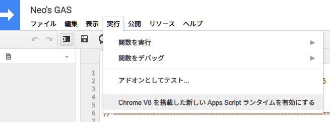

GAS が V8 エンジンに対応したので let が使えるようになった
Google Apps Scripts が V8 エンジンに対応した、というニュースは2020年2月末頃に流れていたと思う。
自分はレガシーな JavaScript も気にせず書けるので、なるほどー最新の ECMAScript 構文が書けるようになって便利になったわねー、ぐらいにしか思っていなかったのだが、最近また GAS を使う機会があったので、触ってみた。
目次
コレまでの GAS は let が使えなかった
面白いことに、コレまでの GAS は、const は書けたのに、let は書けなかったのだ。自分は普段 let をほぼ使わないので気付かなかったが、今回ようやく let が書けるようになったワケだ。
const については、コレまでの Rhino ランタイムでは const に再代入してもエラーが発生せず、最初に代入した値が保持されるという挙動だったが、コレが V8 ランタイムになって、再代入時に TypeError が発生するように変わった。
V8 ランタイムを有効にするには
V8 ランタイムを使うには、自分で明示的にランタイムを切り替えてやらないといけない。
GAS のエディタ画面を開き、上部のメニューから「実行」→「Chrome V8 を搭載した新しい Apps Script ランタイムを有効にする」を選ぶ。

切り替え作業はコレだけ。ランタイムが変わるので、細かな言語仕様により既存のコードは実行結果に差異が出るかもしれない。一度有効にしたあとも、V8 から Rhino に戻すこともできるので、動作確認してみてほしい。
実行速度などの変化はあまり感じないが、新し目の構文がすんなり書けるようになったのは良いかも。